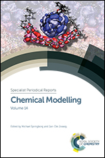

Heike Fliegl
Grants
- 2018: Network partner in SIU project
- 2017: AUS Project UNINETT/Sigma2
- 2015: Kristine Bonnevie fellowship UiO
Research visit at EPFL Lausanne - 2013: Young Research Talent (FRIPRO) grant from The Research Counsil of Norway (NFR)
Research
- Porphyrin compounds
- Magnetic properties
- Magentically induced ring currents in molecules
- Aromaticity
- Hydrogen bonds
- Response theory
- Spectroscopy, UV, NMR, IR, CD, ECD
- Chirality
- Visualization
Projects
- SIU
Network partner in a cooperation project with Russia funded by the Norwegian Centre for International Cooperation in Education (SIU), title: Optical Probe Sensors at Biological Environments (OPS@BE) - GIMIC
The gauge including magnetically induced current method - Advanced user support (AUS) Sigma2/UNINETT
Optimization and parallelization of the GIMIC software for largescale applications - LSDalton/Dalton
- Hydrogen bond strengths for large molecules by local magnetically induced currents
NFR grant
Team
Chandan Kumar
PhD student
Chandan is funded by my NFR project. The title of his
thesis is:
Calculation of molecular response
properties.
He is working on:
- Linear scaling methods
- NMR shielding tensors
- Magnetically induced ring currents
Publications
- H. Fliegl, R. R. Valiev, F. Pichierri and D. Sundholm,
Theoretical studies as a tool for understanding the aromatic character of porphyrinoid compounds,
Chem. Modell., 14, 1, (2018), DOI: 10.1039/9781788010719-00001
 - R. R. Valiev, H. Fliegl and D. Sundholm,
Optical and magnetic properties of antiaromatic porphyrinoids,
Phys. Chem. Chem. Phys., 19, 25979, (2017) - C. Kumar, H. Fliegl and D. Sundholm,
The Relation Between Ring Currents and Hydrogentation Enthalpies for Assessing the Degree of Aromaticity,
J. Phys. Chem. A, 121, 7282, (2017) - R. R. Valiev, H. Fliegl and D. Sundholm,
Closed-shell paramagnetic porphyrinoids,
Chem. Comm., 53, 9866, (2017) - M. Dimitrova, H. Fliegl and D. Sundholm,
The influence of heteroatoms on the aromatic character and the current pathways of B2N2-dibenzo[a,e]pentalenes,
Phys. Chem. Chem. Phys., 19, 20213, (2017) - V. Molina, M. Rauhalahti, J. Hurtado,
H. Fliegl, D. Sundholm and A. Munos-Castro,
Aromaticity introduced by antiferromagnetic ligand mediated metal-metal interactions. Insights from the induced magnetic response in [Cu6(dmPz)6(OH)6],
Inorg. chem. Front., 4, 986, (2017) - C. Kumar, T. Kjærgaard, T. Helgaker and H. Fliegl,
Nuclei-selected atomic orbital response theory formulation of NMR shielding tensors using density-fitting
J. Chem. Phys., 145, 234108, (2016) - H. Fliegl, J. Jusélius and D. Sundholm,
Gauge-Origin Independent Calculations of the Anisotropy of the Magnetically Induced Current Densities
J. Phys. Chem. A, 120, 5658, (2016) - D. Sundholm, H. Fliegl and R. J. F. Berger,
Advanced Review: Calculations of magnetically induced current densities - Theory and Applications
Wiley Interdisciplinary Reviews (WIREs), 6, 639, (2016)

- D. Sundholm, R. J. F. Berger and H. Fliegl,
Analysis of the magnetically induced current density of molecules consisting of annelated aromatic and antiaromatic hydrocarbon rings,
Phys. Chem. Chem. Phys., 18, 15934, (2016) - I. Benkyi, H. Fliegl, R. R. Valiev and D. Sundholm,
New Insights on Aromatic Pathways of Carbachlorins and Carbaporphyrins Based on Calculations of Magnetically Induced Current Densities
Phys. Chem. Chem. Phys., 18, 11932, (2016) - H. Fliegl, Z-Q. You, C-P. Hsu and D. Sundholm,
The Excitation Spectra of Naphthalene Dimers: Frenkel and Charge-transfer Excitons
J. Chin. Chem. Soc., 63, 20, (2016) - D. Du, D. Sundholm and H. Fliegl,
Evaluating Shielding-Based Ring-Current Models by Using the Gauge-Including Magnetically Induced Current Method
J. Chin. Chem. Soc., 63, 93, (2016) - R. R. Valiev, H. Fliegl and D. Sundholm,
Predicting the Degree of Aromaticity of Novel Carbaporphyrinoids
Phys. Chem. Chem. Phys, 17, 14215, (2015) - M. Anelli, D. Jonsson, H. Fliegl and K. Ruud,
The origin dependence of the material constants: the permittivity and the inverse permeability
Mol. Phys. 113, 1899, (2015) - R. R. Valiev, H. Fliegl and D. Sundholm,
Aromatic Pathways in Carbathiaporphyrins
J. Phys. Chem. A, 119, 1201, (2015) - H. Fliegl, F. Pichierri and D. Sundholm,
Antiaromatic Character of 16 π Electron Octaethylporphyrins: Magnetically Induced Ring Currents from DFT-GIMIC Calculations
J. Phys. Chem. A, 119, 2344, (2015) - B. Mennucci, O. Eisenstein, H. Fliegl,
K. H. Hopmann, T. Helgaker and K. Ruud,
Editorial: FemEx–female excellence in theoretical and computational chemistry
Int. J. Quantum Chem., 115, 1195, (2015) - J. H. Aasheim, H. Fliegl, E. Uggerud,
T. Bonge-Hansen and O. Eisenstein,
Stereoselectivity through a network of non-classical CH weak interactions: a prospective study of a bicyclic organocatalytic scaffold
New. J. Chem., 38, 5975, (2014) - R. R. Valiev, H. Fliegl and D. Sundholm,
The aromatic character of thienopyrrole modified 20π-electron porphyrinoids
Phys. Chem. Chem. Phys., 16, 11010, (2014) - M. Hennum, H. Fliegl, L. Gundersen and
O. Eisenstein
Mechanistic insights on the stereoselective nulecophilic 1,2-addition to sulfinyl imines
J. Org. Chem., 79, 2514, (2014) - Y. Li, K. C. Mondal, P. Stollberg, H. Zhu,
H. W. Roesky, R. Herbst-Irmer, D. Stalke
and H. Fliegl,
Unusual formation of a N-heterocyclic germylene via homolytic cleavage of a C–C bond
Chem. Commun. 50, 3356 (2014) - H. Fliegl and D. Sundholm,
Coupled-cluster calculations of the lowest 0--0 bands of the electronic excitation spectrum of naphthalene
Phys. Chem. Chem. Phys.,16, 9859, (2014) - K. Aidas, C. Angeli, K. L. Bak, V. Bakken, L. Boman, O. Christiansen, R. Cimiraglia, S. Coriani, P. Dahle, E. K. Dalskov, U. Ekström, T. Enevoldsen, J. J. Eriksen, P. Ettenhuber, B. Fernández, L. Ferrighi, H. Fliegl, L. Frediani, K. Hald, A. Halkier C. Hättig, H. Heiberg, T. Helgaker, A. C. Hennum, H. Hettema, E. Hjertenæs, S. Høst, I-M. Høyvik, M-F. Iozzi, B. Jansik, H-J. Aa. Jensen, D. Jonsson, P. Jørgensen, J. Kauczor, S. Kirpekar, T. Kjaergaard, W. Klopper, S. Knecht, R. Kobayashi, J. Kongsted, H. Koch, A. Krapp, K. Kristensen, A. Ligabue, O. B. Lutnaes, J. I. Melo, K. V. Mikkelsen, R. Myhre, C. Neiss, C. B. Nielsen, P. Norman, J. Olsen, J. M. H. Olsen, A. Osted, M. J. Packer, F. Pawlowski, T. B. Pedersen, P. F. Provasi, S. Reine, Z. Rinkevicius, T. A. Ruden, K. Ruud, V. Rybkin, P. Salek, C. C. M. Samson, A. Sánches de Merás, T. Saue, S. P. A. Sauer, B. Schimmelpfennig, K. Sneskov, A. H. Steindal, K. O. Sylvester-Hvid, P. R. Taylor, A. M. Teale, E. I. Tellgren, D. P. Tew, A. J. Thorvaldsen, L. Thøgersen, O. Vahtras, M. A.Watson, D. J. D. Wilson, M. Ziolkowski, H. Ågren
The DALTON quantum chemistry program system
Wiley Interdisciplinary Reviews,4, 269, (2014) - H. Fliegl,
Highlight: New insights on porphyrinoid compounds through studies of gauge-including magnetically induced current densities
CTCC Annual Report (2014) - J. Hey, D. Leusser, D. Kratzert, H. Fliegl,
J. M. Dieterich, R. A. Mata and D. Stalke
Heteroaromaticity approached by charge density investigations and electronic structure calculations
Phys. Chem. Chem. Phys., 15, 20600, (2013) - Z. Badri, S. Pathak, H. Fliegl,
P. Rashidi-Ranjbar, R. Bast, R. Marek,
C. Foroutan-Nejad and K. Ruud,
All-Metal Aromaticity: Revisiting the Ring Current Model among Transition Metal Clusters
J. Chem. Theory Comput., 9, 4789, (2013) - E. I. Tellgren and H. Fliegl,
Non-perturbative treatment of molecules in linear magnetic fields: calculation of anapole susceptibilities
J. Chem. Phys., 139, 164118, (2013) - R. R. Valiev, H. Fliegl and D. Sundholm,
Insights into magnetically induced current pathways and optical properties of isophlorins
J. Phys. Chem. A, 117, 9062, (2013) - H. Fliegl, N. Öczan, R. Mera-Adasme,
F. Pichierri, J. Jusélius and D. Sundholm,
Aromatic pathways in thieno-bridged porphyrins: understanding the influence of the direction of the thiophene ring on the aromatic character
Mol. Phys., 111, 1364, (2013) - M. Kaipio, M. Patzschke, H. Fliegl,
F. Pichierri and D. Sundholm,
The effect of fluorine substitution on the aromaticity of polycyclic hydrocarbons
J. Phys. Chem. A, 116, 10257, (2012) - H. Fliegl and D. Sundholm,
Aromatic pathways in porphins, chlorins and bacteriochlorins
J. Org. Chem., 77, 3408, (2012) - H. Fliegl, D. Sundholm and F. Pichierri,
Aromatic Pathways in Mono- and Bisphosphorous Singly Twisted [28] and [30]Hexaphyrins
Phys. Chem. Chem. Phys., 13, 20659, (2011) - H. Fliegl, S. Taubert, O. Lehtonen and D. Sundholm,
Perspective: The gauge including magnetically induced current method (GIMIC)
Phys. Chem. Chem. Phys., 13, 20500, (2011) - H. Fliegl, O. Lehtonen, Y-C. Lin, M. Patzschke
and D. Sundholm,
Theoretical investigation of photoelectron spectra and the magnetically induced current densities in ring-shaped transition metal oxides
Theor. Chem. Acc., 129, 701, (2011) - H. Fliegl, O. Lehtonen, D. Sundholm and
V. R. I. Kaila,
Hydrogen-bond strengths by magnetically induced currents
Phys. Chem. Chem. Phys., 13, 434, (2011) - V. A. Soloshonok, T. Ono, H. Ueki, N. Vanthuyne,
T. S. Balaban, J. Bürck, H. Fliegl, W. Klopper,
J.-V. Naubron, T. T. Bui, A. F. Drake and C. Roussel,
Ridge-tile-like chiral topology: Synthesis, resolution and complete chiroptical characterization of enantiomers of edge-sharing binuclear square planar complexes of Ni(II) bearing achiral ligands
J. Am. Chem. Soc., 132, 10477, (2010) - H. Fliegl, D. Sundholm, S. Taubert and F. Pichierri ,
Aromatic Pathways in Twisted Hexaphyrins
J. Phys. Chem. A, 114, 7153, (2010) - H. Fliegl and D. Sundholm,
Investigation on magnetically induced ring currents in hydrocarbon molecules
Kemiauutiset, Helsingin yliopiston kemian laitoksen verkkolehti, january (2010) - H. Fliegl, D. Sundholm, S. Taubert,
J. Jusélius and W. Klopper,
Magnetically Induced Current Densities in Aromatic, Antiaromatic, Homoaromatic and Nonaromatic Hydrocarbons
J. Phys. Chem. A, 113, 8668, (2009) - F. Schramm, V. Meded, H. Fliegl, K. Fink,
O. Fuhr, Z. Qu, W. Klopper, S. Finn, T. E. Keyes,
and M. Ruben,
Expanding the coordination cage: A ruthenium (II)-polypyridine complex exhibiting extremely high room temperature quantum yields
Inorg. Chem., 48, 5677, (2009) - H. Fliegl, K. Fink,W. Klopper, C. E. Anson,
A. K. Powell, and R. Clérac,
Ab initio study of the magnetic exchange coupling constants of a structural model [CaMnIII3 MnII] of the oxygen evolving center in photosystem II
Phys. Chem. Chem. Phys., 11, 3900, (2009) - S. Taubert, D. Sundholm, J. Jusélius,
W. Klopper and H. Fliegl,
Calculation of magnetically induced currents in hydrocarbon nanorings
J. Phys. Chem. A, 112, 13584,(2008) - H. Fliegl
Coupled-Cluster-R12 methods with auxiliary basis functions
PhD thesis, Universitätsverlag Karlsruhe, ISBN-13: 978-3-86644-061-6, (2006) - H. Fliegl, A. Glöß, O. Welz, M. Olzmann, W. Klopper,
Accurate computational determination of the electronic binding energy of the SO3•H2O complex
J. Chem. Phys., 125, 054312, (2006) - H. Fliegl, C. Hättig,W. Klopper,
Inclusion of the (T) Triples Correction into the Linear-r12 Corrected Coupled-cluster Model CCSD(R12)
Int. J. Quantum Chem., 106, 2306, (2006) - H. Fliegl, C. Hättig,W. Klopper,
Coupled-cluster response theory with linear-r12 corrections: The CC2-R12 model for excitation energies
J. Chem. Phys., 124, 044112, (2006) - H. Fliegl, C. Hättig,W. Klopper,
Coupled-cluster theory with simplified linear-r12 corrections: The CCSD(R12) model
J. Chem. Phys., 122, 84107, (2005) - H. Fliegl, A. Köhn, C. Hättig and R. Ahlrichs,
Ab Initio Calculation of the Vibrational and Electronic Spectra of trans- and cis-Azobenzene
J. Am. Chem. Soc., 125, 9821, (2003)
2018
2017
2016
2015
2014
2013
2012
2011
2010
2009
2008
2006
2005
2003
Contact
Present affiliation
Hylleraas Centre for Quantum Molecular Sciences (former Centre for Theoretical and Computational Chemistry, CTCC), University of Oslo, Norway
Hylleraas Centre
CTCC
Former affiliations
University of Helsinki, Department of Chemistry,
Laboratory for Instruction in Swedish
Karlsruhe Institute of Technology (KIT),
Division for Theoretical Chemistry